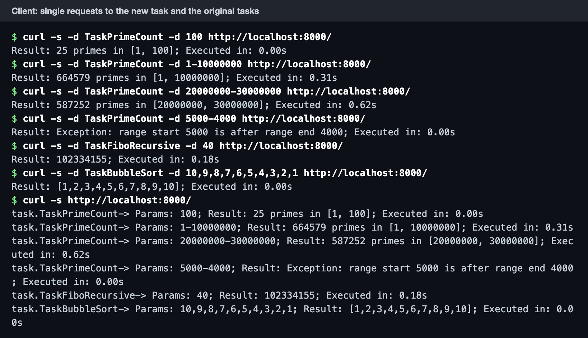
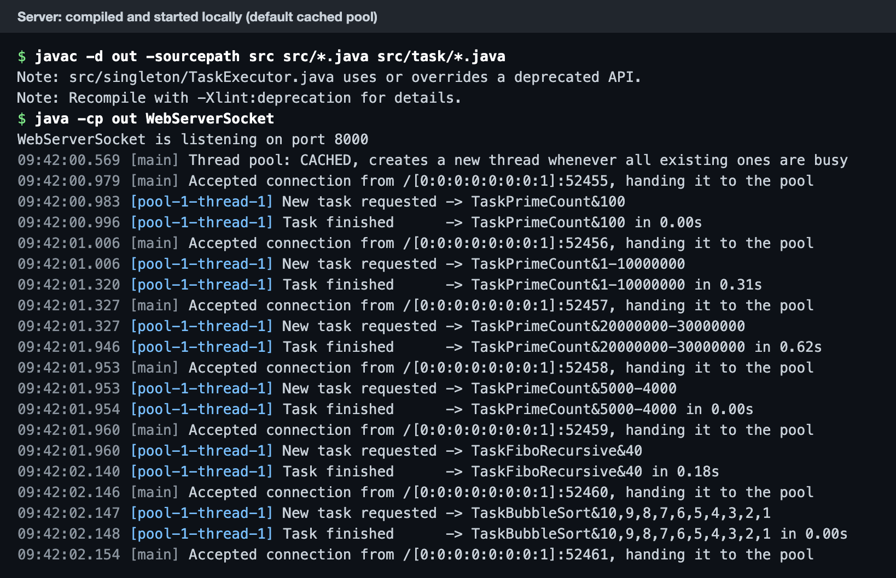
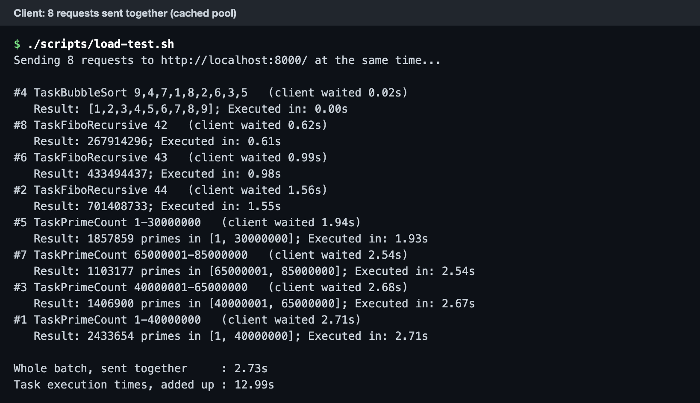
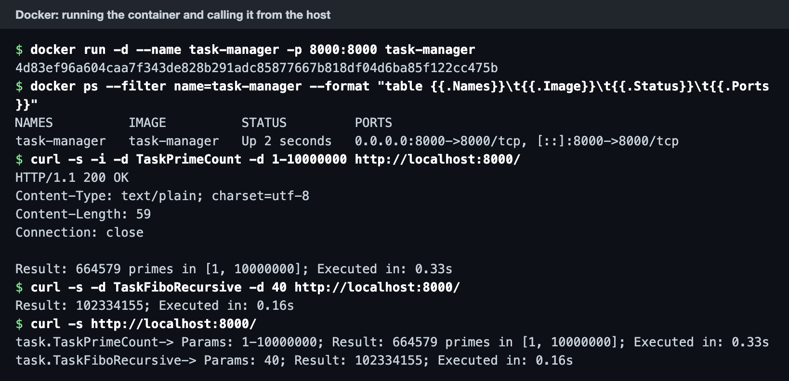
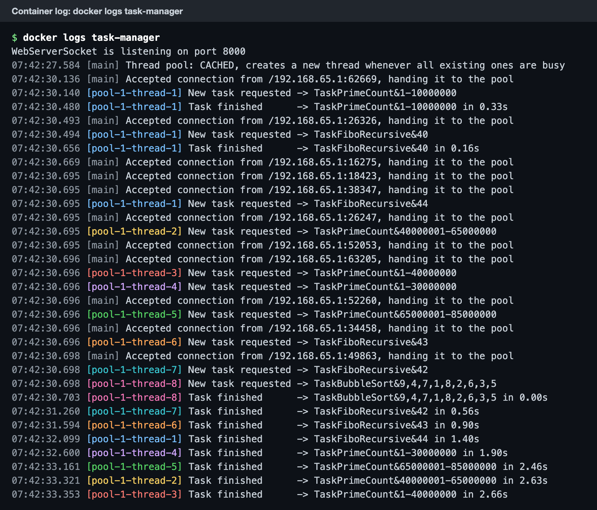

البرمجة التفرعية (Parallel Programming)
دراسة حالة في التصميم المعماري، ثم توسيع مخدّم مهام متعدد الخيوط واختباره ونشره ضمن حاوية Docker
اخترت ثلاثة من السيناريوهات الأربعة: محرك تنفيذ الأدوات للوكيل الذكي، ونظام الفحص الأمني وتحليل السجلات الموزع، ومنصة التقييم الآلي للأكواد البرمجية. تغطي هذه الأنظمة معاً أنواع الحمل الثلاثة التي يتعامل معها مجمّع الخيوط: عمل يقضي معظم وقته في انتظار الشبكة، وعمل يمزج بين الشبكة والمعالج، وعمل حسابي بحت يتأثر بدقة قياس الزمن. أجيب في كل نظام عن التحديات الأربعة من موقع مصمم النظام.
تتشابه الأنظمة الثلاثة في شكل العمل: مهام صغيرة كثيرة ومستقلة عن بعضها، تصل على شكل دفعات مفاجئة، ولا يُعرف
مسبقاً كم ستستغرق كل مهمة. وهذه بالضبط الحالة التي صُمم لها إطار المنفّذات: تُسلَّم المهام إلى
ExecutorService، فينفذها عدد محدود من الخيوط، ويعيد كل تسليم كائن Future يمثل النتيجة
المنتظرة.
في كل خطوة من المحادثة قد يطلب النموذج اللغوي عدة أدوات معاً: بحث في الويب، استعلام من قاعدة البيانات، تشغيل سكربت. ينفذ المحرك هذه الاستدعاءات ويعيد نتائجها إلى النموذج. يقضي استدعاء الأداة معظم وقته في انتظار رد من الشبكة، ولا يمكن توقع مدته.
يملك المحرك مجمّعاً واحداً: Executors.newFixedThreadPool(32). العدد أكبر من عدد نوى المعالج لأن
الخيوط تنتظر معظم الوقت، ويحدّه ما تتحمله الخدمات التي تقف خلف الأدوات (عدد اتصالات قاعدة البيانات، وحد الطلبات
المسموح لدى مزوّد البحث).
كيف ينهار النظام دون المجمّع. لنفترض أن ميزة جديدة جلبت 2000 محادثة في اللحظة نفسها وأن النموذج طلب 5
أدوات في كل محادثة. عند إنشاء خيط بـ new Thread() لكل استدعاء ينشئ المحرك 10,000 خيط خلال ثانية
واحدة. يحجز كل خيط مكدساً خاصاً به (نحو 1 ميغابايت افتراضياً) ويفتح اتصالاً خاصاً به. يرد مزوّد البحث على معظم
الطلبات بالخطأ HTTP 429، وترفض قاعدة البيانات الاتصالات الجديدة، ويقضي المعالج وقته في التبديل بين الخيوط، ثم
تتوقف آلة جافا الافتراضية بالخطأ OutOfMemoryError: unable to create native thread. تتوقف جميع
المحادثات، حتى التي كانت تحتاج أداة واحدة بسيطة. أما مع المجمّع الثابت فيُنفَّذ 32 استدعاء فقط وينتظر الباقي في
رتل المجمّع، فتصبح الإجابات أبطأ عند الذروة بدل أن تسقط الخدمة. كما أن إنشاء الخيط مكلف مقارنة باستدعاء أداة
قصير، والمجمّع يدفع هذه الكلفة 32 مرة فقط.
ملاحظة تصميمية: رتل newFixedThreadPool غير محدود الطول، لذلك أراقب طوله في بيئة
الإنتاج، أو أبني المجمّع برتل محدود وسياسة رفض.
كل استدعاء أداة هو Callable<ToolResult> لأن النموذج يحتاج خرج الأداة. تعيد
submit كائناً من النوع Future<ToolResult>، ولا ينتظره المحرك أبداً دون مهلة:
Future<ToolResult> future = toolPool.submit(() -> webSearch.run(query)); // Callable<ToolResult> try { return future.get(10, TimeUnit.SECONDS); } catch (TimeoutException e) { future.cancel(true); // interrupt the stuck call and free its thread return ToolResult.error("web_search timed out after 10 s"); }
لو استخدمت future.get() دون مهلة لانتظر المحرك إلى الأبد مخدّماً قبِل الاتصال ولم يرد: يبقى
المستخدم أمام مؤشر التحميل ويضيع خيط من المجمّع نهائياً. مع المهلة يستلم النموذج نتيجة عادية تقول إن الأداة
تجاوزت المهلة، فيتابع عمله أو يجرب أداة أخرى أو يخبر المستخدم.
invokeAll(): عندما يطلب النموذج عدة أدوات في خطوة واحدة (الطقس والتقويم ورحلات الطيران
للسؤال نفسه) لا يستطيع المتابعة قبل أن تصله نتيجة كل استدعاء. هذه حالة "انتظار الجميع". أستخدم الصيغة ذات
المهلة كي لا تعطّل أداة بطيئة الخطوة كلها، والاستدعاءات التي لا تنتهي ضمن المهلة تُلغى.invokeAny(): عندما يُرسل السؤال نفسه إلى ثلاثة مزوّدي بحث يمكن استبدال أحدهم بالآخر تكفي
إجابة واحدة. تعيد invokeAny أول استدعاء ينتهي بنجاح وتلغي البقية، والمزوّد الذي يفشل يُهمل
ما دام غيره قد نجح.// every tool call of one model step: wait for all of them, 15 s at most List<Future<ToolResult>> results = toolPool.invokeAll(toolCalls, 15, TimeUnit.SECONDS); // the same query to three providers: the first successful answer wins, the rest are cancelled ToolResult fastest = toolPool.invokeAny(Arrays.asList( () -> providerA.search(query), () -> providerB.search(query), () -> providerC.search(query)));
الاستثناء الذي يُرمى داخل الأداة لا يقتل خيط المجمّع ولا يصل إلى المستدعي من تلقاء نفسه. يخزنه المجمّع داخل
Future، وعند استدعاء get() يُرمى من جديد مغلّفاً بـ ExecutionException،
والاستثناء الأصلي نحصل عليه من getCause(). يحوّله المحرك إلى نتيجة خطأ تُعاد إلى النموذج، فلا يؤثر
فشل أداة في باقي الأدوات. ويجب قراءة كل Future دائماً، لأن الاستثناء الذي لا يسأل عنه أحد يضيع
بصمت.
for (Future<ToolResult> f : results) {
try {
answers.add(f.get());
} catch (ExecutionException e) { // the tool itself threw
answers.add(ToolResult.error("tool failed: " + e.getCause().getMessage()));
} catch (CancellationException e) { // it did not finish inside the 15 s
answers.add(ToolResult.error("tool timed out"));
}
}
الإيقاف الطارئ. عندما يضغط المستخدم زر "إيقاف" يستدعي المحرك cancel(true) على كل استدعاء
ما زال قيد التنفيذ في تلك المحادثة. الاستدعاء الذي لم يبدأ لن يُنفَّذ، والذي يعمل تُرسل إلى خيطه إشارة مقاطعة.
وعلى الأداة أن تتجاوب: العمليات الحاجبة مثل waitFor() وsleep() ترمي
InterruptedException، فتحرر الأداة مواردها في finally، وتعيد رفع علم المقاطعة ليراه
المجمّع.
for (Future<ToolResult> f : runningCalls) f.cancel(true); // the "Stop" button public ToolResult call() throws Exception { // a tool that runs a script Process process = new ProcessBuilder("python3", script).start(); try { process.waitFor(); // cancel(true): InterruptedException here return ToolResult.ok(readOutput(process)); } catch (InterruptedException e) { Thread.currentThread().interrupt(); // keep the interrupt flag set throw e; } finally { process.destroyForcibly(); // the child process never outlives the task } }
يفحص النظام آلاف الأجهزة والمنافذ بحثاً عن الثغرات، ويحلل ملفات السجلات المجمّعة من مخدّمات كثيرة (ملف لكل مخدّم عن كل يوم) بحثاً عن آثار هجوم.
أستخدم مجمّعين لأن نوعي العمل مختلفان: newFixedThreadPool(64) لفحص الشبكة الذي يقضي معظم وقته
منتظراً، وnewFixedThreadPool(availableProcessors()) لتحليل السجلات، وهو عمل حسابي لا يستفيد من خيوط
أكثر من عدد النوى.
كيف ينهار النظام دون المجمّع. فحص شبكة واحدة من الفئة /16 يعني 65,536 عنواناً.
خيط لكل عنوان يفتح 65,536 مأخذ توصيل دفعة واحدة: يصطدم البرنامج بحد نظام التشغيل لعدد الملفات المفتوحة
(Too many open files) ولعدد الخيوط، وقبل أن ينهار يُغرق الشبكة التي يُفترض أن يحميها، فيحجبه الجدار
الناري كأنه هو المهاجم. حجم المجمّع هنا هو أيضاً حد للسرعة: 64 خيطاً تعني 64 فحصاً متزامناً على الأكثر.
فحص جهاز واحد هو Callable<HostReport> (المنافذ المفتوحة والملاحظات)، وتحليل ملف سجل واحد
هو Callable<ShardStats>. الجهاز الواقع خلف جدار ناري لا يرفض الاتصال غالباً بل يبقى صامتاً،
فقد يعلق الفحص دقائق. مع future.get(5, TimeUnit.SECONDS) يكلّف الجهاز الصامت خمس ثوانٍ فقط،
فيُسجَّل على أنه غير متاح ويتابع الفحص.
Future<HostReport> future = probePool.submit(new HostScan(host)); // Callable<HostReport> try { report.add(future.get(5, TimeUnit.SECONDS)); } catch (TimeoutException e) { future.cancel(true); report.markUnreachable(host); // go on with the next host }
invokeAll(): التقرير الليلي يحصي محاولات الدخول الفاشلة في جميع المخدّمات. المجموع
الذي ينقصه ملف واحد خاطئ، لذلك ينتظر التقرير الجميع: parsePool.invokeAll(shardTasks) ثم تُدمج
النتائج الجزئية.invokeAny(): أثناء معالجة حادثة أمنية يسأل المحلل: "هل ظهر هذا العنوان الخبيث في أي
مكان؟". السجلات محفوظة في ثلاث نسخ متطابقة، وأي نسخة تجد العنوان تكفي:
probePool.invokeAny(replicaLookups). وهنا تفصيل مهم: invokeAny تأخذ أول مهمة تنتهي
دون استثناء، لذلك يجب أن ترمي مهمة البحث استثناءً إن لم تجد شيئاً، لا أن تعيد null، وإلا فازت
بالسباق إجابة سريعة تقول "غير موجود".ملف سجل تالف يجعل مهمته ترمي استثناءً. يصل الاستثناء على شكل ExecutionException عند قراءة
النتيجة، فيُعلَّم الملف في التقرير على أنه فشل، وتستمر معالجة باقي الملفات.
try {
total.merge(f.get());
} catch (ExecutionException e) {
report.markFailed(shard, e.getCause()); // damaged file: record it and keep going
}
الإيقاف الطارئ. إن أبطأ الفحص مخدّماً في بيئة الإنتاج، أو أدخل المشغّل شبكة خاطئة، يوجد مفتاح إيقاف.
تقاطع shutdownNow() كل فحص قيد التنفيذ وتفرغ الرتل، وتمنح awaitTermination المهام بضع
ثوانٍ لتنهي التنظيف. عمليات الدخل/الخرج الحاجبة العادية على مآخذ التوصيل لا تستجيب للمقاطعة، لذلك يضبط كل فحص
مهلة اتصال خاصة به ويفحص علم المقاطعة بين الخطوات، وتغلق صيغة try-with-resources المأخذ في كل
الحالات.
void emergencyStop() throws InterruptedException {
List<Runnable> neverStarted = probePool.shutdownNow(); // interrupt scans, empty the queue
if (!probePool.awaitTermination(10, TimeUnit.SECONDS)) {
log("some scans did not stop in time");
}
}
try (Socket socket = new Socket()) { // inside HostScan.call()
socket.connect(new InetSocketAddress(host, port), 2000); // blocking I/O ignores interrupts
if (Thread.currentThread().isInterrupted()) throw new InterruptedException();
// ... probe the service ...
}
تستقبل المنصة حلول المتسابقين، فتترجمها وتشغّل كل حل على مجموعة حالات اختبار داخل عملية معزولة (Sandbox)، ثم تعيد حكماً: Accepted أو Wrong Answer أو Time Limit Exceeded أو Runtime Error.
العمل حسابي بحت، والحكم يعتمد على زمن التنفيذ المقاس، لذلك عدد خيوط المجمّع يساوي عدد نوى الجهاز:
Executors.newFixedThreadPool(Runtime.getRuntime().availableProcessors()).
كيف ينهار النظام دون المجمّع. في الدقيقة الأخيرة من المسابقة يصل 500 حل معاً. خيط لكل حل يشغّل 500 عملية معزولة على 8 نوى. يعمل كل برنامج أبطأ بنحو ستين مرة مما يجب، فتُعطى الحلول الصحيحة حكم "Time Limit Exceeded"، وتنفد الذاكرة فيبدأ نظام التشغيل بقتل العمليات المعزولة، وربما المنصة نفسها. النتائج خاطئة قبل أن ينهار النظام أصلاً. مع المجمّع الثابت تُقيَّم 8 حلول في وقت واحد وينتظر الباقي في الرتل بحالة "Pending". في هذا النظام يحمي المجمّع صحة النتائج، لا استقرار المخدّم فقط.
تشغيل حالة اختبار واحدة هو Callable<Verdict>. قد يحتوي الحل المرسَل حلقة لا نهائية. دون
مهلة، ثمانية حلول كهذه تشغل الخيوط الثمانية إلى الأبد وتتوقف المنصة عن خدمة الجميع. مهلة get هي
الحد الزمني للاختبار مع هامش صغير:
Future<Verdict> future = judgePool.submit(new RunTestCase(submission, test)); // Callable<Verdict> try { return future.get(test.timeLimitMs() + 500, TimeUnit.MILLISECONDS); } catch (TimeoutException e) { future.cancel(true); // interrupts the task; it kills the sandbox return Verdict.TIME_LIMIT_EXCEEDED; } catch (ExecutionException e) { return Verdict.JUDGE_ERROR; // our failure, not the contestant's }
invokeAll(): العلامة النهائية هي عدد حالات الاختبار الناجحة، فلا بد من كل الأحكام قبل
حسابها: judgePool.invokeAll(testCaseTasks).invokeAny(): في مرحلة "الاختراق" (Hack) تحاول المنصة كسر حل مقبول. عدة مهام تولّد
مدخلات عشوائية على التوازي وتقارن خرج الحل بخرج حل مرجعي. تنجح المهمة فقط حين تجد مدخلاً يختلف فيه الخرجان،
فتعيد judgePool.invokeAny(randomTestSearches) أول مثال مضاد وتلغي باقي عمليات البحث.القرار المهم هو تحديد ما يُعدّ خطأً. انهيار البرنامج المرسَل نتيجة عادية: تعيد المهمة
RUNTIME_ERROR. أما ExecutionException فتعني أن مهمة المنصة نفسها فشلت (لم تُقلع
العملية المعزولة، أو ملف اختبار مفقود، أو القرص ممتلئ). لا يجوز أن يُعاقب المتسابق على ذلك، فيكون الحكم "Judge Error" ويعاد الحل إلى الرتل ويُنبَّه المشرف.
الإيقاف الطارئ. عند حل خبيث، أو حين يوقف المشرف التقييم، تقاطع cancel(true) الخيط المنتظر
في waitFor(). تقتل كتلة finally العملية المعزولة وتحذف مجلد عملها أياً كان سبب
الخروج.
public Verdict call() throws Exception { // RunTestCase
Process sandbox = startSandbox(submission, test);
try {
int exitCode = sandbox.waitFor(); // InterruptedException on cancel(true)
if (exitCode != 0) return Verdict.RUNTIME_ERROR; // the program's failure is a result
return outputMatches(sandbox, test) ? Verdict.ACCEPTED : Verdict.WRONG_ANSWER;
} catch (InterruptedException e) {
Thread.currentThread().interrupt();
throw e;
} finally {
sandbox.destroyForcibly(); // also ends infinite loops and fork bombs
deleteWorkDir();
}
}
| محرك تنفيذ الأدوات | الفحص الأمني وتحليل السجلات | منصة التقييم الآلي | |
|---|---|---|---|
| حجم المجمّع | 32، أكبر من عدد النوى: الخيوط تنتظر الشبكة | 64 للفحص، وخيط لكل نواة للتحليل | خيط لكل نواة: ليبقى قياس الزمن عادلاً |
| دون مجمّع | 10,000 خيط واتصال ثم نفاد الذاكرة | تجاوز حد الملفات المفتوحة، وإغراق الشبكة | أحكام "Time Limit Exceeded" خاطئة ثم نفاد الذاكرة |
نتيجة Callable |
ToolResult |
HostReport وShardStats |
Verdict |
get(timeout) |
أداة لا ترد | جهاز يبقى صامتاً | برنامج لا ينتهي |
invokeAll() |
كل أدوات الخطوة الواحدة | كل ملفات التقرير الليلي | كل حالات اختبار العلامة النهائية |
invokeAny() |
أول مزوّد بحث يجيب من ثلاثة | أول نسخة تجد المؤشر | أول مدخل يكسر الحل |
| الإيقاف الطارئ | زر "إيقاف": cancel(true) |
مفتاح الإيقاف: shutdownNow() |
إيقاف التقييم: cancel(true) وقتل العملية المعزولة |
نسخت المشروع المرجعي (github.com/wagnerjfr/web-http-socket-server-task-manager-docker) إلى المجلد
task-manager/ ضمن مستودعي مع الحفاظ على سجل تعديلاته. المشروع لا يستخدم أداة بناء، فهو كود جافا
يُترجم مباشرة بالأمر javac:
task-manager/ ├── Dockerfile ├── src/ │ ├── WebServerSocket.java server built on ServerSocket (the default one) │ ├── WebServerHttp.java the same server built on the JDK's HttpServer │ ├── handler/ RequestsHandlerSocket.java, RequestsHandlerHttp.java │ ├── singleton/TaskExecutor.java creates and runs a task from "TaskName&input" │ ├── singleton/TasksList.java history of executed tasks, shared by all threads │ ├── task/ Task, TaskImpl, TaskFiboRecursive, TaskBubbleSort, ... │ ├── task/TaskPrimeCount.java NEW: my task │ └── util/ NEW: Log.java, PoolFactory.java ├── test/ NEW: TaskPrimeCountTest.java, ServerTest.java └── scripts/ NEW: run-tests.sh, load-test.sh
WebServerSocket.الخيط الرئيسي يستقبل فقط. يفتح WebServerSocket.main كائن ServerSocket على
المنفذ 8000 ويدور في حلقة على accept()، وهي عملية حاجبة تنتظر اتصال زبون ثم تعيد كائن
Socket خاصاً بذلك الزبون. لا يقرأ الخيط الرئيسي الطلب. يغلّف المأخذ بكائن
RequestsHandlerSocket ويسلّمه إلى المجمّع عبر submit، ثم يعود فوراً إلى
accept()، فلا تمنع مهمة بطيئة المخدّم من استقبال الزبون التالي.
try (ServerSocket serverSocket = new ServerSocket(PORT)) { // listen on port 8000
executorService = PoolFactory.fromEnvironment(); // the thread pool
while (running) {
Socket socket = serverSocket.accept(); // main blocks here
Log.info("Accepted connection from " + socket.getRemoteSocketAddress() + ", ...");
RequestsHandlerSocket handler = new RequestsHandlerSocket(socket); // a Runnable
executorService.submit(handler); // runs on a pool thread
}
}
خيط من المجمّع ينفذ العمل. الصف RequestsHandlerSocket يحقق الواجهة Runnable.
يقرأ تابعه run() السطر الأول من طلب HTTP عبر المأخذ. في حالة GET يعيد قائمة المهام
المنفذة. في حالة POST يمرر جسم الطلب، وهو بالشكل TaskName&input، إلى
TaskExecutor.run(). ينشئ هذا التابع كائن المهمة من اسمها بواسطة الانعكاس (Reflection)، ويستدعي
execute()، ويقيس الزمن، ويحفظ المهمة في TasksList، ويعيد نص النتيجة. ثم يكتب خيط
المجمّع نفسه الاستجابة ويغلق المأخذ.
task = (Task) Class.forName("task." + className).newInstance(); // TaskExecutor.createTask()
Runnable أم Callable؟ المعالج هنا Runnable:
لا يعيد قيمة، لأنه يوصل نتيجته بنفسه بالكتابة على المأخذ. وهذا هو الخيار الصحيح هنا. لو كان
Callable<String> لاضطر الخيط الرئيسي إلى استدعاء future.get() ليرسل الجواب، وهذا
يحجب حلقة الاستقبال. ومن نتائج ذلك أن submit تعيد Future يتجاهله المخدّم، فأي استثناء
وقت التنفيذ داخل المعالج يُخزَّن في ذلك الكائن ولا يظهر أبداً. هذا هو "الاستثناء الضائع" الذي ذكرته في فقرة
الأخطاء من السؤال الأول.
المخدّم الثاني WebServerHttp يقوم بالعمل نفسه عبر صف جاهز: يستقبل HttpServer
الاتصالات بنفسه، ويحدد له server.setExecutor(pool) المجمّع الذي ينفذ المعالجات. المجمّع الأصلي في
المخدّمين هو Executors.newCachedThreadPool()، وهو بلا حد أعلى: ينشئ خيطاً جديداً كلما كانت كل
الخيوط الموجودة مشغولة، ويعيد استخدام الخيوط التي فرغت.
openjdk:8-jdk-alpine لم تعد موجودة على Docker Hub.curl إجابات المخدّم WebServerSocket بالرسالة
Received HTTP/0.9 when not allowed، لأن المخدّم يكتب نص النتيجة دون سطر حالة HTTP ودون
ترويسات.TasksList. كل خيوط المجمّع تضيف إلى ArrayList مشتركة
واحدة دون تزامن. في اختباري أضافت 8 خيوط 40,000 مهمة فبقي في القائمة 7,275 فقط.TaskBitcoin تعيد استثناءً لأن خدمة الأسعار الخارجية غيّرت صيغة ردها. تركتها كما هي ولم
أستخدمها في الاختبارات.TaskPrimeCountتحسب المهمة عدد الأعداد الأولية ضمن مجال. دخلها إما N (المجال من 1 إلى N) أو
FROM-TO. اخترتها لأنها عمل حسابي بحت يزداد زمنه مع اتساع المجال: بضعة طلبات متزامنة تعمل مدة كافية
لرؤية تداخلها، ويسهل التحقق من الأجوبة بقيم معروفة (يوجد 664,579 عدداً أولياً حتى عشرة ملايين). اختبار الأولية
هو القسمة التجريبية البسيطة عن قصد.
public class TaskPrimeCount extends TaskImpl {
public static final int MAX_NUMBER = 100_000_000; // largest number accepted
@Override
public void execute() {
try {
int[] range = parseRange(input); // "N" or "FROM-TO"; rejects bad input
int count = countPrimes(range[0], range[1]);
result = count + " primes in [" + range[0] + ", " + range[1] + "]";
} catch (IllegalArgumentException e) {
result = "Exception: " + e.getMessage(); // same convention as the other tasks
}
}
private static boolean isPrime(int n) {
if (n < 2) return false;
if (n < 4) return true; // 2 and 3
if (n % 2 == 0 || n % 3 == 0) return false;
for (int i = 5; i * i <= n; i += 6) { // primes above 3 are 6k-1 or 6k+1
if (n % i == 0 || n % (i + 2) == 0) return false;
}
return true;
}
}
الدمج مع المخدّم. لا توجد في المخدّم قائمة بأسماء المهام تحتاج إلى تعديل. يجد المخدّم المهمة عبر
Class.forName("task." + name)، فيصبح الصف مهمة معروفة بمجرد وجوده في الحزمة task
وتحقيقه الواجهة Task (ورثت من TaskImpl كباقي المهام). وملف Dockerfile يترجم
task/*.java، فيدخل الصف في الصورة دون تعديل إضافي. يطلبها الزبون بالأمر
curl -d TaskPrimeCount -d 1-10000000 http://localhost:8000/، ويدمج curl قيمتي -d في جسم
الطلب TaskPrimeCount&1-10000000.
كتبت الاختبارات قبل الكود. يحوي TaskPrimeCountTest 18 فحصاً (أعداد معروفة، حدود المجال، مدخلات
خاطئة، واستدعاء عبر TaskExecutor كما يفعل المخدّم تماماً)، ويحوي ServerTest 11 فحصاً
للتعديلات الأخرى المذكورة أدناه. تنجح الفحوص الـ 29 كلها عند تشغيل ./scripts/run-tests.sh.
| الملف | التعديل وسببه |
|---|---|
util/Log.java (جديد) |
يبدأ كل سطر في السجل بالوقت وباسم الخيط الذي كتبه. دون اسم الخيط لا يُظهر السجل كيف وزّع المجمّع المهام. |
util/PoolFactory.java (جديد) |
يختار المجمّع حسب متغير البيئة POOL_SIZE: العدد الموجب يعطي
newFixedThreadPool(n)، وغير ذلك يبقي المجمّع الأصلي. بهذا قارنت نوعي المجمّع المذكورين في السؤال
الأول على المخدّم نفسه. |
WebServerSocket.javaWebServerHttp.java |
يستخدمان PoolFactory، ويسجل مخدّم المآخذ كل اتصال يقبله الخيط الرئيسي. |
handler/RequestsHandlerSocket.java |
يرسل استجابة HTTP حقيقية (سطر الحالة، Content-Type، Content-Length) فتقبلها
البرامج العادية. |
singleton/TaskExecutor.java |
يسجل "Task finished" مع مدة المهمة. |
singleton/TasksList.java |
التابعان add() وlist() أصبحا synchronized، فحُلّت مشكلة العناصر
الضائعة. |
Dockerfile |
صورة أساس جديدة وقيمة افتراضية للمتغير POOL_SIZE (الفقرة 2.4). |
ترجمت المخدّم وشغّلته، ثم أرسلت طلبات منفردة: المهمة الجديدة بثلاثة مدخلات ومدخل خاطئ، ومهمتين من المهام
الأصلية، ثم طلب GET يعرض كل ما نُفّذ.


pool-1-thread-1.الأشكال من 2 إلى 11 مولَّدة من نصوص الطرفية المحفوظة في report/evidence/: كل ملف فيه
الأمر كما نُفّذ تماماً يليه خرجه دون أي تعديل. لُوّنت أسماء الخيوط لتسهل متابعتها.
يشغّل السكربت scripts/load-test.sh ثمانية طلبات curl في الخلفية في اللحظة نفسها
وينتظرها كلها: أربعة طلبات TaskPrimeCount على مجالات كبيرة مع ثلاثة طلبات
TaskFiboRecursive وطلب TaskBubbleSort واحد. يطبع لكل رد المدة التي انتظرها الزبون، وفي
النهاية زمن الدفعة كاملة ومجموع أزمنة التنفيذ التي أعلنها المخدّم. شغّلته على المخدّم نفسه بثلاثة إعدادات
للمجمّع. في الجهاز 10 نوى (معالج Apple M5: أربع نوى للأداء وست نوى موفّرة للطاقة).

ما يُظهره السجل:
main الاتصالات الثمانية خلال 2 ميلي ثانية وسلّم كلاً منها إلى المجمّع، ولم ينفذ أي
مهمة بنفسه.pool-1-thread-1 إلى pool-1-thread-8، سجلت
"New task requested" في الميلي ثانية نفسها (09:42:03.408). أنشأ المجمّع خيطاً لكل طلب لأن الخيوط
السابقة كلها كانت مشغولة.POOL_SIZE=4)

ما يُظهره السجل:
pool-1-thread-4 المهمة TaskFiboRecursive&43 عند
09:42:08.168 وبدأ بعد ميلي ثانية واحدة مهمة الترتيب ثم مهمة TaskPrimeCount. ونفّذ
pool-1-thread-1 أيضاً ثلاث مهام متتالية. ولم يُنشأ أي خيط خامس.TaskPrimeCount 1-30000000 نُفّذت في 1.47 ثانية لكن ردها وصل بعد
3.33 ثانية.POOL_SIZE=1) والمقارنةبخيط واحد نُفّذت المهام الثماني واحدة تلو الأخرى على pool-1-thread-1 (النص المحفوظ:
evidence/05-concurrent-fixed1.server.txt). هذا التشغيل هو مرجع التنفيذ التسلسلي.
| المجمّع | الخيوط المستخدمة | زمن الدفعة كاملة | مجموع أزمنة المهام | التسريع مقارنة بخيط واحد |
|---|---|---|---|---|
| (أ) Cached، الأصلي | 8 | 2.73 ثا | 12.99 ثا | 3.7 مرة |
| (ب) ثابت، 4 خيوط | 4 | 3.35 ثا | 10.80 ثا | 3.0 مرات |
| (ج) ثابت، خيط واحد | 1 | 10.02 ثا | 9.99 ثا | 1.0 |
التحليل. بخيط واحد تستغرق الدفعة مجموع أزمنة مهامها (10.02 ثانية مقابل 9.99). بثمانية خيوط يُنجز العمل نفسه في 2.73 ثانية. التسريع 3.7 وليس 8 لسببين. الأول أن الدفعة لا تنتهي قبل أطول مهمة فيها، والمهام ليست متساوية الطول. والثاني أن المهام نفسها عملت أبطأ عند تشغيل ثمانٍ منها معاً: مجموع أزمنتها 12.99 ثانية بدل 9.99. في الجهاز أربع نوى سريعة فقط، فعمل بعض المهام الثماني على النوى الأبطأ الموفّرة للطاقة. المجمّع الثابت من أربعة خيوط أبطأ قليلاً فقط من المجمّع غير المحدود (3.35 ثانية مقابل 2.73) مع أنه يستخدم نصف عدد الخيوط، ويحافظ على هذا الحد مهما كثرت الطلبات. وهذه هي المفاضلة التي ناقشتها في السؤال الأول: المجمّع الأصلي غير المحدود هو الأسرع لثمانية طلبات، لكنه مع ثمانية آلاف طلب سينشئ ثمانية آلاف خيط.
استخدمت ملف Dockerfile الموجود في المشروع كما هو مع تعديلين. الصورة الأساس openjdk:8-jdk-alpine
حُذفت من Docker Hub، فاستبدلتها بالصورة eclipse-temurin:21-jdk-alpine، وهي إحدى الصور الموصى بها
بديلاً عند إيقاف صورة openjdk الرسمية. ما زالت مبنية على Alpine فيعمل سطر apk دون
تغيير، وهي متوفرة للمعماريتين amd64 و arm64 (جهازي من النوع arm64). وأضفت ENV POOL_SIZE=0 ليمكن
اختيار المجمّع عند تشغيل الحاوية. خطوة الترجمة javac *.java task/*.java تلتقط المهمة الجديدة
تلقائياً.
FROM eclipse-temurin:21-jdk-alpine # was: openjdk:8-jdk-alpine (no longer on Docker Hub) ENV WEBPATH=/webserver/ ENV WEBSERVER="WebServerSocket" ENV POOL_SIZE=0 # 0 = cached pool, N > 0 = fixed pool of N threads RUN apk update && apk add ca-certificates wget && update-ca-certificates RUN mkdir -p $WEBPATH COPY src/ $WEBPATH WORKDIR $WEBPATH RUN javac *.java task/*.java # compiles TaskPrimeCount with the rest EXPOSE 8000 CMD java $WEBSERVER

docker build -t task-manager . (مع الخيار
--no-cache لإظهار كل الخطوات). التحذير في آخر الخرج سببه سطر CMD الأصلي ولا يؤثر في
البناء.تُشغَّل الحاوية مع الخيار -p 8000:8000 الذي ينشر منفذ الحاوية 8000 على الجهاز المضيف. كل الطلبات
التالية مرسلة من الجهاز المضيف، أي من خارج الحاوية.



docker logs task-manager. الاتصالات قادمة من العنوان
192.168.65.1، وهو عنوان على شبكة Docker Desktop الواصلة بين الجهاز المضيف والحاويات، أي أن الطلبات
جاءت من خارج الحاوية. وداخلها تعمل المهام الثماني على ثمانية خيوط من المجمّع في الوقت نفسه.يمكن تشغيل الإعدادات الأخرى من الصورة نفسها دون إعادة بناء: docker run -e POOL_SIZE=4 ...
للمجمّع الثابت، وdocker run -e WEBSERVER=WebServerHttp ... لمخدّم HttpServer.
# from the folder task-manager/ ./scripts/run-tests.sh # 29 checks javac -d out -sourcepath src src/*.java src/task/*.java # build java -cp out WebServerSocket # run (terminal 1), cached pool POOL_SIZE=4 java -cp out WebServerSocket # or: fixed pool of 4 curl -d TaskPrimeCount -d 1-10000000 http://localhost:8000/ # one request (terminal 2) curl http://localhost:8000/ # list of executed tasks ./scripts/load-test.sh # eight requests at once docker build -t task-manager . docker run -d --name task-manager -p 8000:8000 task-manager ./scripts/load-test.sh && docker logs task-manager